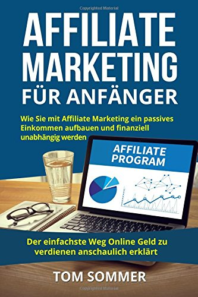

Welcome to Finanziell unabhängig
Was ist ein Passives Einkommen? Wie wird man reich?
2020.11.28 10:34Gemeinsam finanziell Unabhängig
Mit Aktien, P2P, ETF, Crypto und Blog
Hauptmenü
Springe zum Inhalt Startseite Blog Gutscheine – Promocode – Rabatte Finanzblogroll Blogger Podcast YouTube ImpressumShort-Aktien
ZUM BLOG
Was ist ein passives Einkommen? Ein passives Einkommen ist im Gegensatz zu aktiven Einkommen, wie der Name es schon sagt passiv. Man macht nicht wirklich was aktives um ein Einkommen zu bekommen. Man legt beispielsweise Geld auf die Bank und kassiert Zinsen. Kauft Aktien und sahnt die Dividenden/Kurse ein. Schreibt Bücher oder verdient Geld durch Werbeeinblendungen. An diesen drei Beispielen, verdient man Geld, 24 Stunden am Tag, 7 Tage die Woche. Selbstverständlich bekommt man das passive Einkommen nicht ohne aktiv dafür etwas gemacht zu haben. Für Zinsen und Dividenden, muss man Geld aufbringen, dies geschieht nur, wenn man ein aktives Einkommen hat. Um Tantiemen zu bekommen, muss man ein Buch Schreiben, das Schreiben ist ein aktiver Prozess.
Was ist finanzielle Freiheit?
Was ist finanzielle Freiheit? Finanzielle Freiheit spiegelt sich nicht in der Masse des Geldes und ist relativ! Jedoch kann man diese finanzielle Freiheit auf ein Faktor definieren: Finanzielle Freiheit bedeutet ohne Arbeit leben zu können, ob das nun mit 500€ im Monat geschieht oder mit 5000€, das ist jedem überlassen! Fakt ist, dass man die finanzielle Freiheit nur auf ein paar Wegen erreichen kann, Erbe, Lottogewinn oder einem passiven Einkommen.
Denn ohne ein aktives Einkommen kann man kein passives Einkommen aufbauen. Andersrum kann man sagen: Mit einem steigendem Passiven Einkommen, kommt die finanzielle Freiheit näher.
Von finanzieller Unabhängigkeit zu finanzieller Freiheit. Sobald du dich bei der Deckung deiner finanziellen Bedürfnisse nicht mehr auf andere verlassen musst, kannst du deine Sparanstrengungen wirklich ausweiten. Und je mehr du sparst, desto näher kommst du der finanziellen Freiheit. Nimm zum Beispiel deinen derzeitigen Arbeitsplatz. Wenn du richtig budgetierst, kannst du von jedem Gehaltsscheck einen Prozentsatz für bestimmte Ziele zurücklegen.
Zuerst und vor allem zahlst du deine monatlichen Rechnungen und Lebenshaltungskosten ab. Als nächstes legst du einen bestimmten Prozentsatz in deine Ersparnisse an. Du kannst diese Bemühungen sogar automatisieren, um die Geldüberweisungen zu einem bestimmten Datum im Monat sicherzustellen.
Zuletzt nimm einen kleinen Prozentsatz deines Einkommens und lerne, wie man in Aktien investiert. Dies wird dir helfen, ein passives Einkommen zu entwickeln. Was ist finanzielle Unabhängigkeit ohne eine kluge Anlagestrategie überhaupt? Es ist eine schlechte.
An der Börse zu investieren ist dein schnellster Weg in die finanzielle Freiheit. Mit Zinseszinsen bietet dir die Börse die besten Chancen, massive Erträge zu erzielen. Darüber hinaus werden deine Gesamtzinserträge mit der Erweiterung deines Portfolios wachsen.
Und das schmälert nicht deine Sparanstrengungen. Es handelt sich um ein Win-Win-Szenario, das dir das Potenzial enormer Börsengewinne eröffnet.
Finde Deinen Weg in die Unabhängigkeit. Gewohnheiten beeinflussen jeden Aspekt des Lebens, einschließlich deiner Finanzen. Die Entwicklung gesunder finanzieller Gewohnheiten kann dich auf den richtigen Weg führen. Spar dein Geld, lebe im Rahmen deiner Möglichkeiten und treffe kluge Anlageentscheidungen.
Was ist finanzielle Unabhängigkeit ohne einen Plan? Es ist wie ein Affe beim Dart werfen mit verbundenen Augen. Öffne deine Augen für eine bessere Zukunft und beginne schon heute mit dem Aufbau von Wohlstand.
Jeder kann ein passives Einkommen verdienen
In meinen Augen sollte jeder Mensch so ein passives Einkommen besitzen. Es ist eines der Grundlegendsten Einnahmemöglichkeiten und Absicherung im Leben. Schon deshalb, weil heutige Arbeit einfach nicht sicher ist. Jeden Tag kann etwas passieren, ein unvorhergesehenes Ereignis. Ein Notgroschen und ein monatlichen Geldfluss aus einer passiven Quelle ist dann ein wahrer Segen. Als Elternteil kann man seinem Kind günstig ein Junior-Depot eröffnen und mit einer monatlichen Einzahlung von 25€ in einen soliden ETF investieren. Der Zinsenszins macht dann 18 Jahre seine Arbeit und das Kind hat ein standfestes Fundament und Du kannst dich entspannt zurücklehnen.
Und das ist auch ein weiterer Punkt warum jeder ein passives Einkommen haben sollte. Die Zeit auf dieser Welt ist kostbar, jeder Mensch arbeitet 40 Stunden oder mehr in der Woche, Monat für Monat, Jahr für Jahr. Und diese Zeit ist kostbar und diese sollten wir alle besser nutzen als im Büro zu sitzen und für jemanden anderes zu arbeiten!
Beispiele für ein passives Einkommen:
Wertpapiere
Aktien und ETF sind eine gute Möglichkeit, schnell und ohne viel Arbeit ein passives Einkommen zu generieren. Man profitiert von Dividenden und Kurssteigerungen. In Zeiten von 0% Zinsen auf Sparbücher oder Tagesgeldkonten, sind Wertpapiere das A und das O!
Was sind Aktien und wie funktionieren sie? Aktien sind eine Investition in ein Unternehmen und die Gewinne dieses Unternehmens. Investoren kaufen Aktien, um eine Rendite auf ihre Investition zu erzielen.
Blog
Falls Du wie ich auch eine recht kreative Ader hast, kann man auch mit einem Blog Geld verdienen. Sei es über ein Hobby, Reisen oder Kurzgeschichten, man findet in jeder Nische Menschen die sich für das gleiche Thema interessieren. Doch in Gegensatz zu Aktien ist das Geld verdienen mit einem Blog, mit Mehraufwand verbunden. Texte schreiben, SEO für Suchmaschinen optimieren , Gebühren für Domain und Hosting
Affiliate- Marketing
Gut eingesetzt kann man mit Afilliate-Marketing ebenfalls den einen oder anderen Euro verdienen. Dabei hat der Leser/Zuschauer nie Mehrkosten wenn man auf Afilliate-Links klickt, es ist quasi eine Win-Win Situation. Der Leser/Zuschauer bekommt ein Produkt vorgestellt und für den erfolgreichen Kauf bekommt der Anbieter eine Provision. Doch auch hier gilt weniger ist mehr und mit gutem Gewissen arbeiten.
Was finde ich noch auf disem Blog?
Dieser Blog beschäftigt sich nicht nur wie man einfach Geld investiert, was kauft oder von Grund auf neu aufbaut. Sondern ebenfalls wie man richtig Videos produziert für YouTube oder ein richtiges SEO für seinen Blog anwendet, es mag zwar auf den ersten Blick Themenfremd erscheinen, doch viele Beispiele für ein passives Einkommen benötigen Menschen, Traffic und Sichtbarkeit. Wenn man also mit seinem Blog Geld verdienen will, sollte der Blog optimal für Suchmaschinen vorbereitet sein, den nur dann kommen die Leser und nur so baut sich eine Community auf und damit das passives Einkommen.
Basiswissen über Aktien Aktuelle Neuerungen in der Finanzwelt Youtube Mind setting/ Motivation Dividendenkalender Amazon FBA Blogparaden Zielsetzungen Bloging/ SEO Rezensionen Kryptowährungen P2P KrediteWas sind Aktien?
Aktien sind eine Investition in ein Unternehmen und die Gewinne dieses Unternehmens. Investoren kaufen Aktien, um eine Rendite auf ihre Investition zu erzielen.
Einfach ausgedrückt: Aktien sind eine Möglichkeit, Wohlstand zu schaffen. Sie sind eine Investition, die bedeutet, dass du eine Aktie des Unternehmens besitzt, das die Aktie ausgegeben hat.
Aktien sind die Art und Weise, wie gewöhnliche Menschen in einige der erfolgreichsten Unternehmen der Welt investieren. Für Unternehmen sind Aktien eine Möglichkeit, Geld zur Finanzierung von Wachstum, Produkten und anderen Initiativen aufzubringen.
Was ist ein ETF?
Börsengehandelte Fonds sind eine Art Körbe mit verschiedenen Arten von Investitionen, die zu einer einzigen Einheit zusammengefasst werden, die dann den Anlegern Aktien anbietet, die anschließend an den großen Börsen gehandelt werden. Jede Aktie eines ETFs gibt seinem Besitzer eine proportionale Beteiligung am Gesamtvermögen des börsengehandelten Fonds.
ETFs orientieren sich im Allgemeinen an verschiedenen Benchmarks, wobei jeder Fonds mit dem Ziel investiert, die Renditen der vom Fonds gewählten Benchmark zu erreichen. Es gibt einige wenige ETFs mit Portfoliomanagern, die ihre Anlagen aktiv selbst auswählen. Aufgrund der Offenlegungsvorschriften, die solche Fonds dazu verpflichtet sind, den Anlegern täglich über ihre Bestände zu informieren, wählen die meisten Manager, die Geld mit aktiven Managementstrategien verwalten wollen, andere Vehikel als ETFs.
Was ist SEO?
SEO steht für “Search Engine Optimization” (Suchmaschinenoptimierung). Dabei handelt es sich um die Praxis, um sowohl die Qualität und Quantität des Website-Traffics als auch die Exposition gegenüber Ihrer Marke durch unbezahlte (auch als “organisch” bekannt) Suchmaschinenergebnisse zu erhöhen.
Auch ohne je was von SEO gehört zu haben oder umzusetzen, hast du definitiv schon SEO betrieben. SEO ist Überschrift erstellen, planen was der Besucher auf deiner Seite erreichen will oder wie du ihn dazu bewegen kannst, länger auf deiner Seite zu bleiben.
Trotz des Akronyms geht es bei SEO genauso sehr um Menschen wie um die Suchmaschinen selbst, wenn nicht sogar mehr, schließlich erstellst du die Inhalte für Lebewesen und nicht Maschinen. Es geht darum zu verstehen, wonach Menschen online suchen, welche Wörter sie verwenden und welche Art von Inhalt sie konsumieren möchten. Wenn du die Antworten auf diese Fragen kennst, kannst du eine Verbindung zu den Menschen herstellen, die online nach den von deinen angebotenen Lösungen/Artikeln/Produkten suchen.
Was sind P2P-Kredite?
P2P-Websites funktionieren wie Marktplätze. Sie bringen Menschen oder Unternehmen, die Geld verleihen wollen, mit denen zusammen, die einen Kredit aufnehmen wollen. Es ist eine Möglichkeit für Kreditnehmer, Geld zu bekommen, ohne zu den Banken zu gehen.
Auf einigen Websites wird das Geld, das Sie verleihen, automatisch unter vielen Kreditnehmern aufgeteilt, aber bei anderen können Sie wählen, wem Sie Ihr Geld leihen möchten. Im Allgemeinen gilt: Je höher der Zinssatz, den jemand zahlen wird, desto riskanter ist er wahrscheinlich.
Was ist eine Kryptowährung?
Kryptowährung ist eine Zahlungsform, die online gegen Waren und Dienstleistungen eingetauscht werden kann. Viele Unternehmen haben ihre eigenen Währungen ausgegeben, die oft als Token bezeichnet werden und die speziell für die Ware oder Dienstleistung, die das Unternehmen anbietet, gehandelt werden können. Stellen Sie sich diese Währungen so vor, als würden Sie Token oder Kasino-Chips in einer Spielhalle eintauschen. Sie müssen echte Währung in die Kryptowährung umtauschen, um Zugang zu der Ware oder Dienstleistung zu erhalten.
Kryptowährungen funktionieren mit einer Technologie namens Blockchain. Blockchain ist eine dezentralisierte, über viele Computer verteilte Technologie, die Transaktionen verwaltet und aufzeichnet. Ein Teil des Reizes dieser Technologie liegt in ihrer Sicherheit. Mittlerweile gibt es auch DLT, einen Distributed Ledger.
Was ist Amazon FBA?
Fulfillment By Amazon (FBA) ist ein Service von Amazon, der den Verkäufern Unterstützung bei Lagerung, Verpackung und Versand bietet. Dadurch werden die Verkäufer entlastet und erhalten mehr Flexibilität in ihren Verkaufspraktiken. Das Programm ermöglicht es Verkäufern, ihre Waren an ein Fulfillment-Center von Amazon zu liefern, wo die Artikel bis zum Verkauf in Lagerhäusern gelagert werden. Wenn eine Bestellung aufgegeben wird, bereiten Amazon-Mitarbeiter die Ware(n) physisch vor, verpacken und versenden sie.
Wie mit YouTube Geld verdienen?
Um direkt über YouTube zu verdienen, musst du eine Partnerschaft mit der Website eingehen. Sobald du das getan hast, gibt es verschiedene Möglichkeiten, Geld zu verdienen, aber um Partner zu werden, musst du die Anforderungen erfüllen:
Deine Videos müssen den Werberichtlinien der Website entsprechen und innerhalb der letzten 12 Monate mehr als 4.000 gültige öffentliche Abspielstunden aufweisen Du musst in einem förderfähigen Gebiet wohnen Du brauchst mehr als 1.000 Abonnenten Du musst ein Google AdSense-Konto verlinkenJe mehr Videos du hast, desto einfacher ist es, die Schwelle für die Aufrufe zu erreichen. Qualitativ hochwertige, unterhaltsame Videos werden mit größerer Wahrscheinlichkeit angesehen, daher lohnt es sich, Aufwand in Planung und Produktion zu investieren. Sobald du die Anforderungen erfüllst, kannst du dich bewerben, indem du in dein Profil klickst und zum Abschnitt “Monetarisierung” navigierst.
Als Partner kannst du durch Anzeigen, Mitgliedschaftsvergünstigungen und Funktionen wie den Super-Chat, bei dem Zuschauer dafür bezahlen können, dass ihre Botschaften während eines Live-Streams hervorgehoben werden, Geld verdienen. Es wird vielleicht am Anfang schwierig sein, ein passives Einkommen mit YouTube zu beziehen. Jedoch verlangt diese Königsdisziplin viel Weitsicht, Geduld und Fleiß, aber ab da, geht es nur noch Bergauf.
Wie verdiene ich Geld mit einem Podcast?
Es scheint, als ob heutzutage jeder mit einem Podcast Geld verdient und einen Podcast erstellt. Einige Leute sagen, dass das traditionelle Podcasting (d.h. das reine Audio-Podcasting) den Weg des Dodo-Vogels geht und bald von YouTube, Netflix und anderen Spezialvideokanälen verdrängt wird. Im besten Fall ist Podcasting eine gute Möglichkeit, deine Leidenschaft für ein Hobby auszudrücken und Informationen mit Freunden zu teilen, nicht wahr?
Die Realität sieht jedoch so aus, dass die Nachfrage nach reinen Audio-Inhalten steigt und die beliebteste Art, diese Art von Inhalten zu konsumieren, der Podcast ist. Obwohl es Podcasts schon seit geraumer Zeit gibt, scheinen sie gerade den Mainstream zu erreichen, was bedeutet, dass sich jetzt mehr denn je eine großartige Gelegenheit bietet, deinen eigenen Podcast zu starten, ein Publikum aufzubauen und damit Geld zu verdienen.
Nun, die Informationswirtschaft wird immer mehr mit der neuesten Technologie überfüllt und Video hat sicherlich seinen Reiz. Zumindest vorläufig behält Podcasting jedoch einige Vorteile gegenüber Video bei. Zum Beispiel können die Menschen während des Autofahrens, beim Training im Fitnessstudio oder im Freien und bei einer Reihe anderer wichtiger Aktivitäten kein Video ansehen. Und dies sind die Zeiten, in denen die Menschen sehr beliebt sind, um sich täglich ihren Lieblings-Podcast anzusehen.
Und manche Leute ziehen es einfach vor, ihre Inhalte per Audio zu konsumieren, anstatt sie mit anderen Methoden wie Text oder Video zu verbreiten. Davon abgesehen, gibt es immer noch realistische Möglichkeiten für Menschen, mit der boomenden Podcast-Industrie Geld zu verdienen?
Wenn du daran interessiert bist, deinen eigenen Podcast zu gründen, nur um deine Leidenschaften zu teilen oder einen Podcast zu erstellen, um etwas zusätzliches Geld zu verdienen, dann bist du hier genau richtig, den ein Podcast kann eine gute und interessante Möglichkeit sein ein passives Einkommen zu generieren.
Erreiche deine finanzielle Freiheit
Viele Menschen machen keinen Haushaltsplan, weil sie Angst davor haben, was sie vorfinden werden oder sie sind einfach nur faul. Wenn du viel zu viel ausgegeben hast, dass du nun vor einem Schuldenberg stehst oder vom Lohnzettel zu Lohnzettel lebst, dann machst du was falsch! Aber nichts zu tun und vor allem so weiter zu machen, ist keine Lösung, da sind wir uns doch einig oder?
Dein größtes Instrument zur Vermögensbildung ist dein Einkommen! Der beste Weg, die Kraft dein Einkommen zu nutzen, ist das monatliche Budget.
Wenn du vorausschauend denkst, träumst du vielleicht davon, die Arbeitswelt zu verlassen. Viele Blogs rund um die Finanzen, wollen dies mit einem passiven Einkommen erreichen. Mein Blog dreht sich darum. Und wenn du diese Gedanken der Freiheit hast, dann strick sie weiter um im Ruhestand ein einfacheres Leben zu führen. Aber ein Traum ohne Plan ist nur ein Wunsch. Also lass uns das ändern.
Um diesen Traum zu verwirklichen, musst du ein passives Einkommen in Betracht ziehen. Es gibt unzählige Möglichkeiten des passiven Einkommens und Erklärungen, wie man diesen aufbauen kann. Ich hatte schon mal das passive Einkommen beschrieben vor 3 Jahren. Mal sehen, was heute alles kommt.
Bilde dein Mindset aus für die finanzielle Freiheit
Betrachte deine Misserfolge als den Schlag des Meißels. Jeder Meißelschlag verleiht deinem Marmorblock, ein wenig mehr Tiefe und einen Hauch von Einzigartigkeit und Form. Jede neue Erfahrung und jedes Scheitern ist eine Lektion im Leben, die uns etwas lehrt. Wenn du dich jetzt entscheiden müsstest, keine Risiken einzugehen, selbstgefällig zu sein, neue Erfahrungen und Ideen zu vermeiden, wird sich an deinem Leben auch nicht viel ändern.
Wenn es etwas gibt, was dich neugierig macht, versuch es einfach. Vielleicht wirst du dir dabei die Zähne ausbeißen. Du wirst sogar vielleicht wie ein absoluter Idiot aussehen, aber weißt du was? Du sollst dich darauf freuen, vorwärts zu scheitern, denn nur so wirst du neue Dinge lernen, ständig wachsen und Schritt für Schritt deine ganz eigenen Version von Erfolg näher kommen! Wie kann das nicht aufregend sein? Die Komfortzone verlassen und die Welt erkunden.
Ich sage dir das gleiche wie ich mir damals, du sollst das gleiche machen, einfach springen, springen in etwas Neues und neues ausprobieren. Wenn du einmal gescheitert bist, dann erkennst du, dass du dadurch nur ein bisschen mehr den Meißel geschwungen hast um deinem eigenem Meisterwerk näher zu kommen.
Was unterscheidet diejenigen, die Großes leisten, von denen, die ihre Ambitionen nicht verwirklichen können? Du könntest Intelligenz, Risikofreude oder sogar Kreativität vermuten. Das sind alles vernünftig klingende Vorschläge, aber das ist nicht das, was die Wissenschaft gefunden hat.
Nach den Arbeiten der Stanford-Psychologin Carol Dweck und anderen Wissenschaftlern ist der beste Prädiktor für den Erfolg im Leben keiner dieser üblichen Verdächtigen es ist deine Denkweise oder auch Mindset genannt. Diejenigen, die Großes erreichen, glauben im Allgemeinen, dass sie sich als Menschen verbessern und wachsen können . Das nennt man eine “Wachstumshaltung”. Diejenigen, die in ihren Versuchen, ihre Träume zu verwirklichen, frustriert sind, neigen dazu, zu glauben, dass ihre Fähigkeiten und Talente statisch sind, alias eine “feste Denkweise”.
Entdecke deinen Charakter
Einige Anleger sind der Meinung, dass Aktien am besten für langfristige Investitionen geeignet sind. Das liegt daran, dass die Aktienkurse zwar regelmäßig steigen und fallen, der historische Trend im Laufe der Zeit jedoch nach oben gegangen ist. Andere Händler entscheiden sich dafür, den Markt aktiv zu beobachten und handeln oft in der Hoffnung auf einen kurzfristigen Gewinn .
Die Entscheidung, ob der Aktienhandel das Richtige für dich ist, beginnt mit dem Verständnis dessen, was dir wichtig ist. Wenn du weißt, was du erreichen willst, kann dir das die Auswahl der in Frage kommenden Aktien erleichtern. Beginne also damit, diese fünf Fragen zu stellen:
Was sind meine finanziellen Ziele? Was sind meine persönlichen Umstände? Wie sieht mein Zeitrahmen aus? Mit wie viel Risiko fühle ich mich wohl? Brauche ich Beratung?
Bilde dein Finanzwissen aus
Finanzkompetenz ist die Fähigkeit, zu verstehen, wie man solide finanzielle Entscheidungen trifft, damit du dein Geld selbstbewusst verwalten und vermehren kannst.
Wenn du dich in Finanzfragen auskennst, bist du in der Lage, dein Einkommen gleichzeitig für verschiedene Ziele einzusetzen – nicht nur für laufende Ausgaben, sondern auch für Ersparnisse, Schuldentilgung und eine „hohe Kante“ für schlechte Zeiten. Du kannst dich auf dem Finanzmarkt selbstbewusst bewegen und in Krisen bessere Entscheidungen treffen.
Was bedeutet es eigentlich finanziell gebildet zu sein?
Verdienst Brutto/Netto Steuerlichen Verhältnisse Richtiges sparen und absichern Betrug erkennen Budge einrichten Wie funktionieren KreditePassives Einkommen auch Visuell
Falls du nicht lesen willst, kannst du auch gerne meinem YouTube Kanal folgen, auch dort dreht sich alles um das Geld, Aktien und Börse. Dort entsteht gerade eine frische Community, wo wir gemeinsam den Visuellen Weg bestreiten können. Ein kleines Beispiel gefällig ?
Podcast: Hör dich reich
Du bist viel auf Achse willst dich aber trotzdem über finanzielle Themen berieseln lassen oder du brauchst langweilige Themen zum einschlafen? Perfekt, Passives Einkommen, Aktien und Wirtschaftlicher Tohuwabohu gibt es auch als Podcast. Hier sind dir keine Grenzen gesetzt. Diesen Podcast mache ich mit einem Freund, Felix B. Hör dich reich entstand durch eine Idee, die ich hatte. Gesagt getan. Mittlerweile haben wir knapp 100 Zuhörer, was für die kurze Zeit sehr erfreulich für uns ist.
Apple Podcast | Spotify | podcast.de | Deezer | Stitcher | player.fm | Listen Notes
[dsgvo_service_control]
Anmelden
shortaktien.de
#Finanzblogger | Passives Einkommen | Persönliche Finanzen | Finanzielle Bildung | #Geld
#blogger
#forex
#shortaktien
#dresden
Schlagwörter
2018 2019 Aktie Amazon Analyse Apple bitcoin blog Budget Budgetplan Business Börse comdirect Dividende Dividenden Dresden Einkommen Erfahrung ETF ethereum Finanzielle Freiheit Finanzielle Unabhängigkeit Geld Grundeinkommen Hör dich reich Investieren IOTA kostenlos Mannabase Mindset Mintos motivation Nel Asa P2p Rendite Rezension sparen Startup SteemPress Student Tesla Umdenken Warren Buffet Wasserstoff ZinsenKategorien
Aktien Allgemein Amazon FBA Basics Blogparade Dividendenkalender ETF Finanziell Umdenken Forex Kryptowährung P2P Kredite Passives Einkommen Podcast Rezensionen YouTube Zertifikate ZieleArchive
November 2020 Oktober 2020 September 2020 August 2020 Juli 2020 Juni 2020 Mai 2020 März 2020 Februar 2020 Januar 2020 Dezember 2019 Oktober 2019 September 2019 Juni 2019 Mai 2019 April 2019 März 2019 Februar 2019 Januar 2019 November 2018 Oktober 2018 September 2018 August 2018 Juli 2018 Juni 2018 Mai 2018 März 2018 Februar 2018 Januar 2018 Dezember 2017 November 2017 Oktober 2017 September 2017 August 2017 Juli 2017 Juni 2017 Mai 2017 April 2017 März 2017 Februar 2017 Januar 2017 Dezember 2016 August 2015 Februar 2015Bekannt aus
